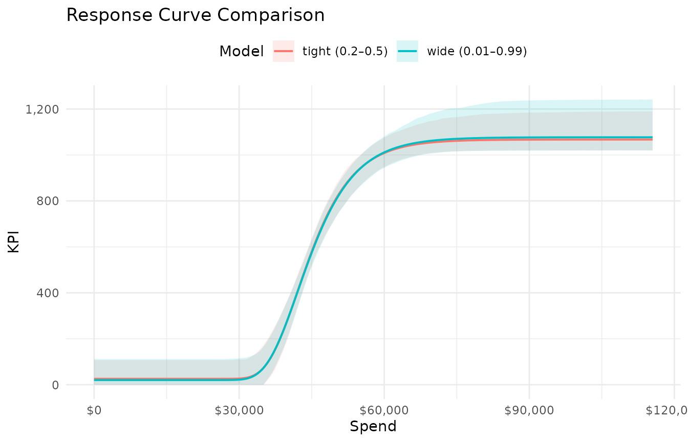

Priors and Model Tuning
priors_and_tuning.RmdBayesian models require prior distributions on every parameter. Poor
priors can produce curves that converge numerically but are
scientifically implausible — ceiling estimates ten times the observed
maximum, or midpoints far outside the data range. This vignette explains
how mrmopt’s prior system works and how to tune it when the
default fit is unsatisfactory.
The three-tier prior system
mrmopt offers three levels of prior control. Most users
should work at the simplified level.
1. Automatic (default)
When auto = TRUE (the default in
fit_response()), priors are generated automatically based
on the observed data range. This is a reasonable starting point but uses
wide defaults that may be too permissive for some channels.
2. Simplified via mrmopt_prior()
The recommended approach for most workflows.
mrmopt_prior() lets you constrain the four curve parameters
using intuitive, scale-invariant inputs:
my_prior <- mrmopt_prior(
midpoint_range = c(0.2, 0.6),
ceiling_max = 2.5,
floor_min = 0,
anchor_strength = 0.05
)
my_prior
#> mrm_prior specification:
#> midpoint range : [0.2, 0.6] (x-axis fraction)
#> ceiling max : 2.5 x observed max of y
#> floor min : 0 (original data units)
#> anchor strength: 0.05 (fraction of y range)These translate to Stan priors internally — you do not need to know the scaled parameter space.
3. Manual via brms::prior()
For advanced users who want full control. Pass a raw
brmsprior object to the prior argument of
fit_response(). When doing this with
auto = FALSE and scale_data = FALSE, you take
full responsibility for the prior specification.
What each prior control does
midpoint_range — where the inflection falls
A two-element vector giving the lower and upper bound for the
inflection point as a fraction of the x-axis (spend) range. For example,
c(0.2, 0.6) means the inflection must fall between the 20th
and 60th percentile of observed spend.
This is the most impactful prior control. A tight
midpoint_range anchors the curve’s shape to a plausible
region:
-
Too wide (e.g.,
c(0.01, 0.99)): The model may place the inflection far outside the observed data, producing a nearly linear fit. -
Too narrow (e.g.,
c(0.3, 0.35)): Overly informative — the data has little room to speak. -
Good default:
c(0.1, 0.5)for channels where you expect diminishing returns to be visible within the observed spend range. Widen towardc(0.1, 0.9)if unsure.
ps_data <- mrmopt_data |> filter(channel == "Paid Search")
fit_tight <- fit_response(
data = ps_data,
spend = "spend",
kpi = "conversions",
date = "week",
type = "gompertz",
midpoint_range = c(0.2, 0.5),
ceiling_max = 3,
refresh = 0,
iter = 1000,
chains = 2
)
#> conversions ~ c + (d - c) * exp(-exp(b * (spend - e)))
#> b ~ 1
#> c ~ 1
#> d ~ 1
#> e ~ 1
fit_wide <- fit_response(
data = ps_data,
spend = "spend",
kpi = "conversions",
date = "week",
type = "gompertz",
midpoint_range = c(0.01, 0.99),
ceiling_max = 5,
refresh = 0,
iter = 1000,
chains = 2
)
#> conversions ~ c + (d - c) * exp(-exp(b * (spend - e)))
#> b ~ 1
#> c ~ 1
#> d ~ 1
#> e ~ 1
mrms_plot_compare(
list("tight (0.2–0.5)" = fit_tight, "wide (0.01–0.99)" = fit_wide),
interval = "confidence"
)
The tighter prior produces a more clearly identified curve. The wider prior allows the credible band to expand substantially, particularly at the extremes of the spend range.
ceiling_max — how high the curve can reach
A multiplier on the observed maximum of the KPI column.
ceiling_max = 3 means the ceiling parameter d
can be at most 3× the highest observed weekly conversions.
-
Too low (e.g.,
1.1): Forces the ceiling close to the observed max, which may be appropriate if you believe the channel is near saturation, but can produce a poor fit if the data doesn’t clearly plateau. -
Too high (e.g.,
10): Allows implausibly large ceilings. The posterior may settle on a high ceiling with a far-off midpoint, producing a curve that looks linear in-sample. -
Good default:
2to3for most channels. Lower if the data clearly shows a plateau; higher for channels where you believe substantial headroom remains.
floor_min — baseline KPI at zero spend
The lower asymptote c in original units. Defaults to
0, meaning the model assumes zero conversions at zero
spend. Set this higher if you have organic conversions that persist
without paid media.
# Channel with known organic baseline of ~50 conversions/week
fit_response(
...,
floor_min = 40 # allow floor between 40 and observed data
)
anchor_strength — how tightly the floor is held
Controls the prior SD on the floor parameter c as a
fraction of the observed y range. The default 0.05 (5% of
the range) keeps the floor tightly constrained around
floor_min, which prevents the curve from developing an
unrealistically high or negative baseline.
-
Smaller values (e.g.,
0.02): Very tight floor constraint. Use when you have strong knowledge of the baseline. -
Larger values (e.g.,
0.2): Loose constraint. The floor can move substantially fromfloor_min. -
NULL: No floor constraint beyond the default. Use when you genuinely don’t know the baseline.
Passing prior controls to fit_response()
You can pass midpoint_range, ceiling_max,
floor_min, and anchor_strength directly as
arguments to fit_response() — there is no need to create an
mrmopt_prior() object first:
fit_response(
data = ps_data,
spend = "spend",
kpi = "conversions",
date = "week",
type = "gompertz",
midpoint_range = c(0.15, 0.5),
ceiling_max = 2.5,
floor_min = 0,
anchor_strength = 0.03,
refresh = 0
)The standalone mrmopt_prior() constructor is useful when
you want to inspect the prior object or reuse the same specification
across multiple fits.
Common tuning scenarios
The curve looks nearly linear
Symptom: The response curve is a gentle slope with no visible saturation, and the ceiling estimate is very high relative to observed data.
Diagnosis: The model placed the midpoint far to the right of the observed data. The curve is in its early accelerating phase across the entire data range.
Fix: Tighten midpoint_range to force
the inflection into the observed range. Lower ceiling_max
to prevent runaway ceiling estimates.
fit_response(..., midpoint_range = c(0.1, 0.4), ceiling_max = 2)Wide credible bands
Symptom: The posterior band is so wide it’s not informative. The curve could be nearly flat or steeply rising — the data doesn’t distinguish.
Diagnosis: Usually indicates insufficient spend variation (see Data Requirements) or overly permissive priors.
Fix: First check that the data has adequate spend
variation. If so, tighten midpoint_range and
ceiling_max. If not, more data is needed — tighter priors
will reduce uncertainty cosmetically but not substantively.
The floor is negative or unreasonably high
Symptom: The fitted c parameter is
negative (implying negative KPI at zero spend) or much higher than
expected organic baseline.
Fix: Set floor_min to a sensible value
and reduce anchor_strength:
fit_response(..., floor_min = 0, anchor_strength = 0.02)Divergent transitions or low ESS
Symptom: Stan warnings about divergent transitions, or Bulk ESS < 400.
Diagnosis: The posterior geometry is difficult for the sampler. This can happen when priors are contradictory, when the data is very sparse, or when a parameter is weakly identified.
Fix: Try in order:
- Increase
iterandwarmup(e.g.,iter = 4000, warmup = 2000) - Tighten priors to reduce the posterior’s effective volume
- Try a different curve type — some curve forms fit certain data shapes more naturally
- Increase
adapt_deltaviacontrol = list(adapt_delta = 0.99)
Inspecting the effective priors
To see the actual Stan priors that mrmopt generates, fit
a model and examine the brms prior specification:
brms::prior_summary(fit_tight)
#> prior class coef group resp dpar nlpar lb ub tag
#> normal(-4, 10) b b -10 0
#> normal(-4, 10) b Intercept b -10 0
#> normal(0, 0.05) b c -0.2 0.2
#> normal(0, 0.05) b Intercept c -0.2 0.2
#> normal(1.9, 10) b d 0.8 3
#> normal(1.9, 10) b Intercept d 0.8 3
#> normal(0.35, 10) b e 0.2 0.5
#> normal(0.35, 10) b Intercept e 0.2 0.5
#> student_t(3, 0, 2.5) sigma 0
#> source
#> user
#> (vectorized)
#> user
#> (vectorized)
#> user
#> (vectorized)
#> user
#> (vectorized)
#> defaultThis shows the priors on the scaled parameter space. The mapping
between the simplified controls and these Stan priors depends on the
data scaling, which is why working with the scale-invariant
mrmopt_prior() interface is recommended.
Where to go next
| Topic | Vignette |
|---|---|
| Convergence diagnostics and model comparison | Diagnostics & Model Comparison |
| Mathematical foundations of the six curve forms | Response Curve Theory |
| Budget optimization across channels | Optimization |